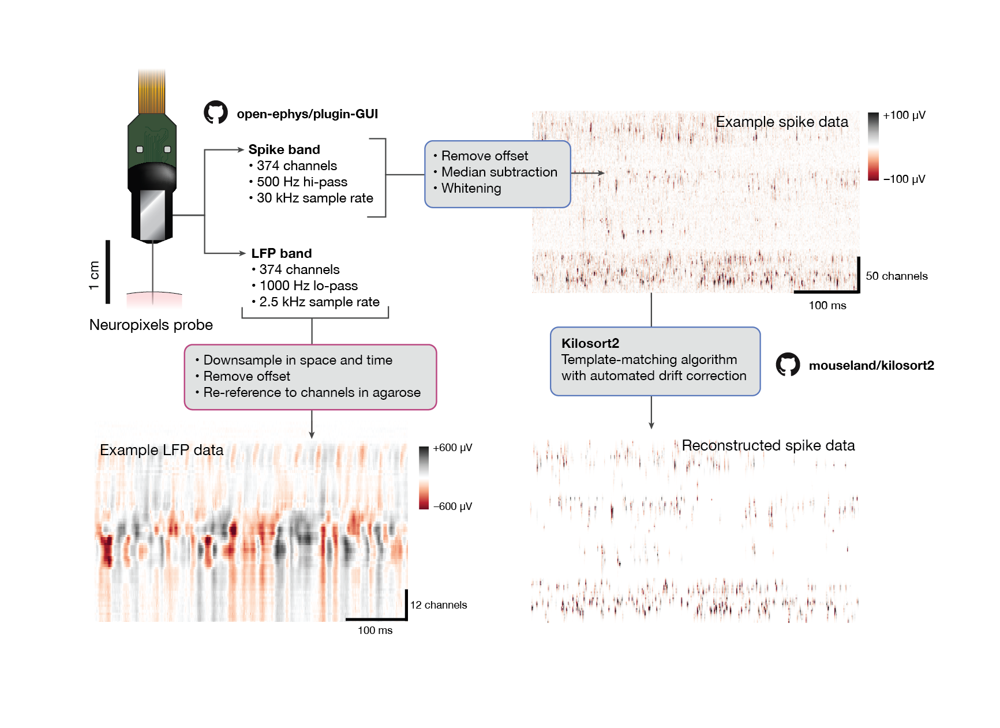
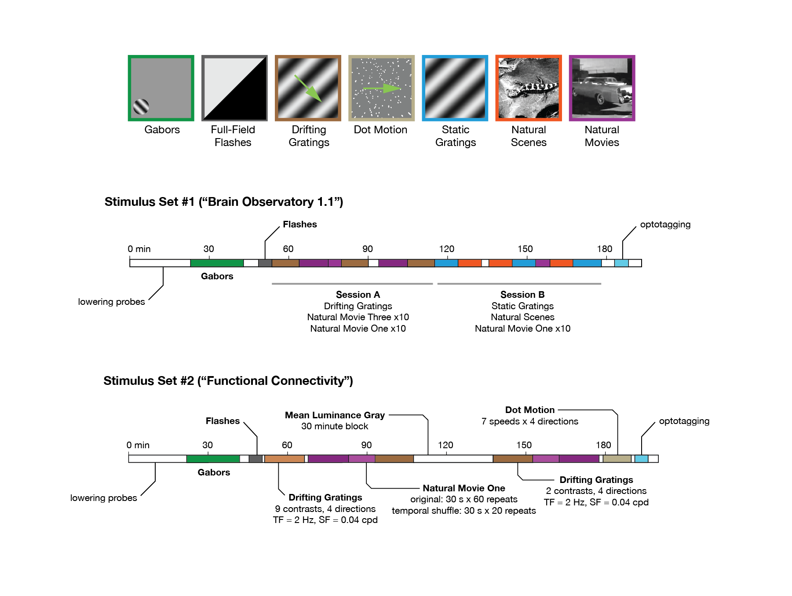
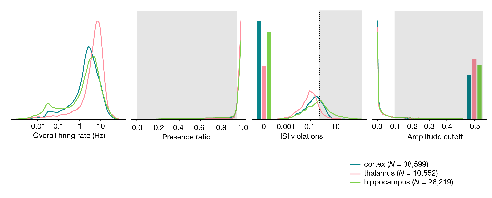

Visual Coding – Neuropixels¶
The Visual Coding – Neuropixels project uses high-density extracellular electrophysiology (Ecephys) probes to record spikes from a wide variety of regions in the mouse brain. Our experiments are designed to study the activity of the visual cortex and thalamus in the context of passive visual stimulation, but these data can be used to address a wide variety of topics.
Spike-sorted data and metadata are available via the AllenSDK as Neurodata Without Borders files. However, if you’re using the AllenSDK to interact with the data, no knowledge of the NWB data format is required.
Getting Started¶
To jump right in, check out the quick start guide (download .ipynb), which will show you how to download the data, align spikes to a visual stimulus, and decode natural images from neural activity patterns. For a quick summary of experimental design and data access, see the cheat sheet.
If you would like more example code, the full example notebook (download .ipynb) covers all of the ways to access data for each experiment.
Additional tutorials are available on the following topics:
For detailed information about the experimental design, data acquisition, and informatics methods, please refer to our technical whitepaper. AllenSDK API documentation is available here.
A note on terminology: Throughout the SDK, we refer to neurons as “units,” because we cannot guarantee that all the spikes assigned to one unit actually originate from a single cell. Unlike in two-photon imaging, where you can visualize each neuron throughout the entire experiment, with electrophysiology we can only “see” a neuron when it fires a spike. If a neuron moves relative to the probe, or if it’s far away from the probe, some of its spikes may get mixed together with those from other neurons. Because of this inherent ambiguity, we provide a variety of quality metrics to allow you to find the right units for your analysis. Even highly contaminated units contain potentially valuable information about brain states, so we didn’t want to leave them out of the dataset. But certain types of analysis require more stringent quality thresholds, to ensure that all of the included units are well isolated from their neighbors.
Data Processing¶
{kind=link}

Neuropixels probes contain 374 or 383 channels that continuously detect voltage fluctuations in the surrounding neural tissue. Each channel is split into two separate data streams, or “bands,” on the probes. The “spike band” is digitized at 30 kHz, and contains information about action potentials fired by neurons directly adjacent to the probe. The “LFP band” is digitized at 2.5 kHz, and records the low-frequency (<1000 Hz) fluctuations that result from synchronized neural activity over a wider area.
To go from the raw spike-band data to NWB files, we perform the following processing steps:
Median-subtraction to remove common-mode noise from the continuous traces
High-pass filtering (>150 Hz) and whitening across blocks of 32 channels
Spike sorting with Kilosort2, to detect spikes and assign them to individual units
Computing the mean waveform for each unit
Removing units with artifactual waveforms
Computing quality metrics for every unit
Computing stimulus-specific tuning metrics
For the LFP band, we:
Downsample the signals in space and time (every 4th channel and every 2nd sample)
High-pass filter at 0.1 Hz to remove the DC offset from each channel
Re-reference to channels outside of the brain to remove common-mode noise
The packaged NWB files contain:
Spike times, spike amplitudes, mean waveforms, and quality metrics for every unit
Information about the visual stimulus
Time series of the mouse’s running speed, pupil diameter, and pupil position
LFP traces for channels in the brain
Experiment metadata
All code for data processing and packaging is available in the ecephys_spike_sorting and the ecephys section of the AllenSDK.
Visual Stimulus Sets¶
{kind=link}

A central aim of the Visual Coding – Neuropixels project is to measure the impact of visual stimuli on neurons throughout the mouse visual system. To that end, all mice viewed one of two possible stimulus sets, known as “Brain Observatory 1.1” or “Functional Connectivity”. Both stimulus sets began with a Gabor stimulus flashed at 81 different locations on the screen, used to map receptive fields of visually responsive units. Next, the mice were shown brief flashes of light or dark, to measure the temporal dynamics of the visual response.
The remainder of the visual stimulus set either consisted of the same stimuli shown in the two-photon experiments (“Brain Observatory 1.1”), or a subset of those stimuli shown with a higher number of repeats. We also added a dot motion stimulus, to allow us to measure the speed tuning of units across the mouse visual system.
AllenSDK 2.0 and Data Compatability¶
AllenSDK version 2.0 marks a major update to released Visual Coding Neuropixels datasets. Due to newer versions of pynwb/hdmf having issues reading previously released Visual Coding Neuropixels NWB files and due to the significant reorganization of updated NWB file contents, this release contains breaking changes that necessitate a major version revision. NWB files released prior to 6/11/2020 are not guaranteed to work with the 2.0.0 version of AllenSDK. If you cannot or choose not to re-download the updated NWB files, you can continue using a prior version of AllenSDK (< 2.0.0) to access them. However, no further features or bugfixes for AllenSDK (< 2.0.0) are planned. Data released for other projects (Cell Types, Mouse Connectivity, etc.) are NOT affected and will NOT need to be re-downloaded.
When using the Visual Coding EcephysProjectCache from this updated AllenSDK version, if a ManifestError is encountered, this indicates that previously downloaded cached data files need to be removed and re-downloaded. The location these files as well as manifest are user defined and are set when instantiating an EcephysProjectCache.
Quality Metrics¶
{kind=link}

Every NWB file includes a table of quality metrics, which can be used to assess the completeness, contamination, and stability of units in the recording. By default, we won’t show you units below a pre-determined quality threshold; we hide any units that are not present for the whole session (presence_ratio < 0.95), that include many contaminating spikes (isi_violations > 0.5), or are likely missing a large fraction of spikes (amplitude_cutoff > 0.1). However, even contaminated or incomplete units contain information about brain states, and may be of interest to analyze. Therefore, the complete units table can be accessed via special flags in the AllenSDK.
In general, we do not make a distinction between ‘single-unit’ and ‘multi-unit’ activity. There is no obvious place to draw a boundary in the overall distributions of quality metrics, and setting a strict cutoff (e.g. isi_violations = 0) will remove a lot of potentially valuable data. We prefer to leave it up to the end user to decide what level of contamination is tolerable. But that means you need to be aware that different units will have different levels of cleanliness.
It should also be noted that all of these metrics assume that the spike waveform is stable throughout the experiment. Given that the probe drifts, on average, about 40 microns over the course of the ~3 hour recordings, this assumption is almost never valid. The resulting changes in waveform shape can cause a unit’s quality to fluctuate. If you’re unsure about a unit’s quality, it can be helpful to plot its spike amplitudes over time. This can make it obvious if it’s drifting below threshold, or if it contains spikes from multiple neurons.
Documentation on the various quality metrics can be found in the ecephys_spike_sorting repository.
For a detailed discussion of the appropriate way to apply each of these metrics, please check out this tutorial (download .ipynb)
Precomputed Stimulus Metrics¶
Tables of precomputed metrics are available for download to support population analysis and filtering. The table below describes all of the available metrics. The get_unit_analysis_metrics() method
will load this table as a pandas DataFrame.
Stimulus |
Metric |
Field Name |
|---|---|---|
drifting gratings |
preferred orientation |
pref_ori_dg |
preferred temporal frequency |
pref_tf_dg |
|
global ori. selectivity |
g_osi_dg |
|
global dir. selectivity |
g_dsi_dg |
|
running modulation |
run_mod_dg |
|
running modulation p-value |
p_run_mod_dg |
|
firing rate |
firing_rate_dg |
|
fano factor |
fano_dg |
|
modulation index |
mod_idx_dg |
|
f1/f0 |
f1_f0_dg |
|
lifetime sparseness |
lifetime_sparseness_dg |
|
c50 (contrast tuning stimulus) |
c50_dg |
|
static gratings |
preferred orientation |
pref_ori_sg |
preferred spatial frequency |
pref_sf_sg |
|
preferred phase |
pref_phase_sg |
|
global ori. selectivity |
g_osi_sg |
|
running modulation |
run_mod_sg |
|
running modulation p-value |
p_run_mod_sg |
|
firing rate |
firing_rate_sg |
|
fano factor |
fano_sg |
|
lifetime sparseness |
lifetime_sparseness_sg |
|
natural scenes |
preferred image index |
pref_image_ns |
image selectivity |
image_selectivity_ns |
|
running modulation |
run_mod_ns |
|
running modulation p-value |
p_run_mod_ns |
|
firing rate |
firing_rate_ns |
|
fano factor |
fano_factor_ns |
|
lifetime sparseness |
lifetime_sparseness_ns |
|
dot motion |
preferred speed |
pref_speed_dm |
preferred direction |
pref_dir_dm |
|
running modulation |
run_mod_dm |
|
running modulation p-value |
p_run_mod_dm |
|
firing rate |
firing_rate_dm |
|
fano factor |
fano_factor_dm |
|
lifetime sparseness |
lifetime_sparseness_dm |
|
full-field flashes |
on/off ratio |
on_off_ratio_fl |
running modulation |
run_mod_fl |
|
running modulation p-value |
p_run_mod_fl |
|
firing rate |
firing_rate_fl |
|
fano factor |
fano_factor_fl |
|
lifetime sparseness |
lifetime_sparseness_fl |
|
gabors |
RF area |
area_rf |
RF elevation |
elevation_rf |
|
RF azimuth |
azimuth_rf |
|
RF p-value |
p_value_rf |
|
running modulation |
run_mod_rf |
|
running modulation p-value |
p_run_mod_rf |
|
firing rate |
firing_rate_rf |
|
fano factor |
fano_factor_rf |
|
lifetime sparseness |
lifetime_sparseness_rf |